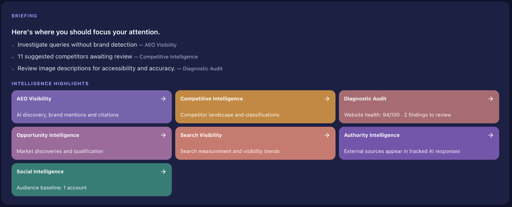
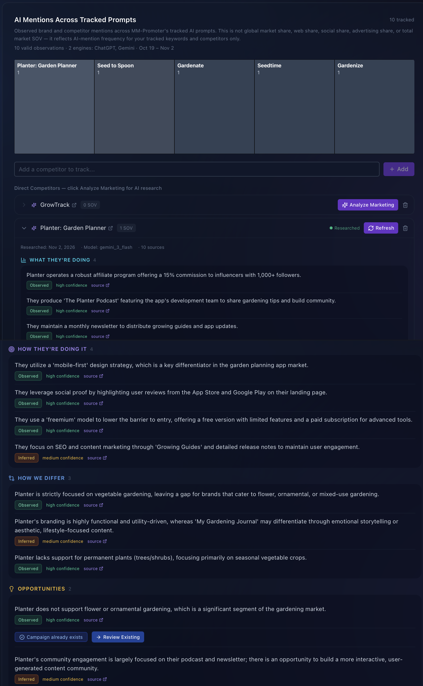
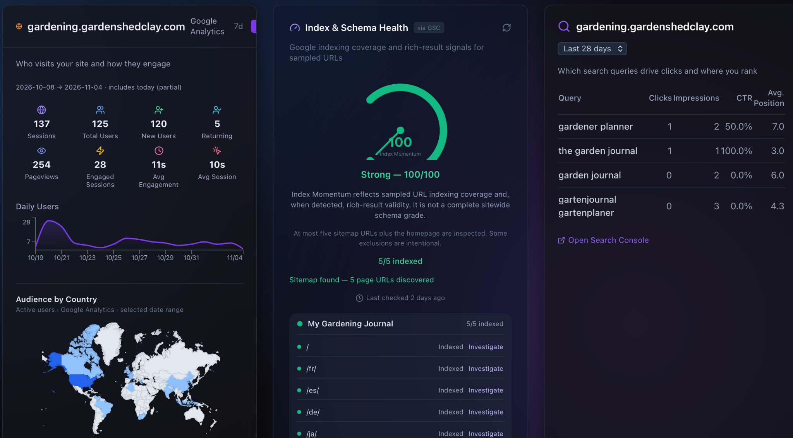
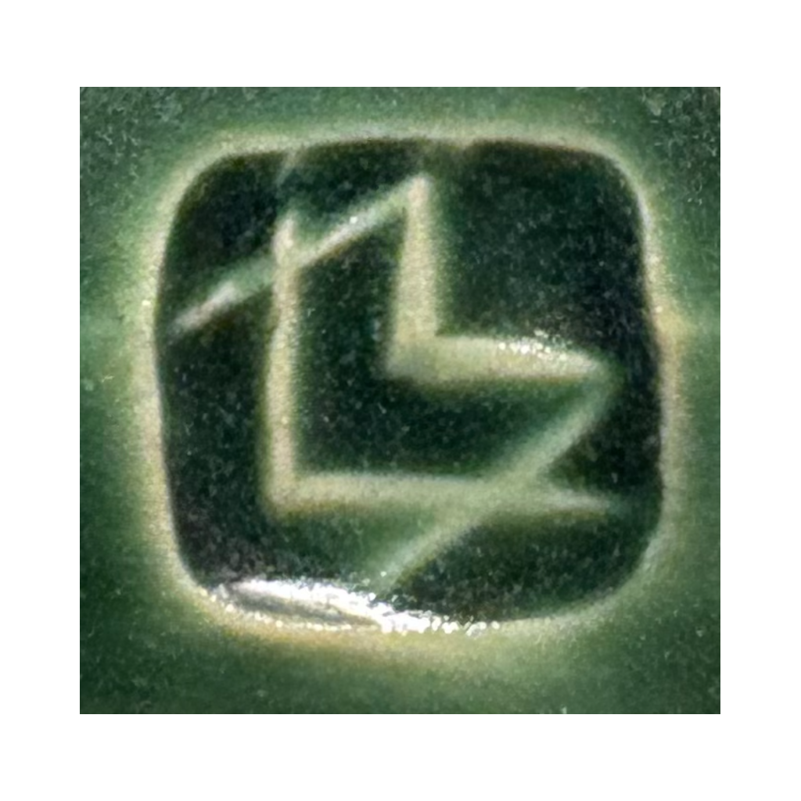

MM-Promoter analyzes your marketing performance, discovers opportunities for growth, and helps turn recommendations into action—preparing the work so you can focus on running your business.
See how search engines and online visitors can discover and understand your business.
Good insights. Better decisions.
⌕SearchDiscover opportunities to improve your visibility.
▥CompetitorsUnderstand where your competitors are getting ahead.
↗Past resultsLearn what works. Build on your results.
Prepared for YouHigh priority
Your next opportunity, ready for review.
We've identified an opportunity to improve your online visibility and prepared a recommendation for your review.
Why This Opportunity Matters
Your search visibility and competitive intelligence reveal an opportunity to help more customers discover your business.
Recommended actionImprove website visibility
StatusReady for review
Review recommendation
Who we're here for
Built for small businesses. Built for the everyday entrepreneur.
You don't need a big marketing team or a big budget to compete. MM-Promoter helps you discover opportunities, make smarter decisions, and turn ideas into action—so you can spend more time doing what you love: running your business.
The problem isn't a lack of data
You're already doing the marketing.
You're advertising, watching competitors, trying new ideas, and doing everything you can to make your business work. But it isn't always clear what is helping, what is wasting your time, or what you should do next.
↗
Activity without direction
Plenty gets published, but priorities are still driven by urgency and instinct.
⌁
Signals in separate places
Search, social, competitors, campaigns, and AI visibility rarely tell one coherent story.
?
Reports without decisions
Metrics describe what happened but don't always explain the next useful move.
From insight to action
Less figuring things out. More moving forward.
MM-Promoter brings your marketing information together, identifies opportunities worth pursuing, and helps prepare the work to make them happen. You stay in control of what gets approved and put into action.
Your marketing priorities, opportunities, and next steps—all in one place.
What you get
Clear direction on what works for your business.
Know where to focus
See which marketing opportunity deserves attention now and which tasks can wait.

Click to explore the screenshot ↗
Understand why
Review the evidence, competitive context, and reasoning behind each recommendation.

Click to explore the screenshot ↗
Understand the impact
See how your marketing efforts influence results, identify what’s working, and use those insights to make smarter decisions.

Click to explore the screenshot ↗
How it works
Data-driven insights. Customized opportunities and recommendations.
MM-Promoter connects the dots, finds opportunities, prepares your next moves, and learns from the results.
STEP 01
Connect your marketing world
Bring together useful information from your website, social channels, search visibility, advertising, competitors, and other marketing activity.
STEP 02
Discover what matters most
MM-Promoter identifies what is working, what may be holding you back, and which opportunities are worth pursuing first.
STEP 03
Let MM-Promoter work
MM-Promoter prepares recommendations, website improvements, campaigns, and content for your review. You decide what gets approved and put into action.
STEP 04
Measure, learn, and improve
Track what happened and use those results to make the next round of recommendations smarter.
In the real world
See what MM Promoter finds.
▧Case-study image or short video Recommended: MM Promoter analyzing its own homepage
Featured case study
We asked MM Promoter to analyze MM Promoter.
Placeholder for the story of how the diagnostic revealed that strong product capabilities were buried beneath technical, company-centered language.
Add before + after + observed result
Garden Shed Clay, LLC — Small Business Story
From scattered marketing activity to a clearer plan.
“Running a small business means wearing a lot of hats. Between creating pottery, building my website and an e-commerce portal all by myself, and trying to reach customers, marketing can become a chaotic collection of disconnected tasks that are difficult to track, draw meaningful insights from, and prioritize. It's not always clear where to focus my energy or invest my marketing dollars.
MM-Promoter has helped me bring all these moving parts into one place, adding analysis, recommendations, and practical assistance. Instead of jumping between cobbled-together analytics, scattered search results, and social channels, trying to figure out what deserves attention and what it all means, I can see where the opportunities are, understand the reasoning behind the recommendations, and decide what to tackle next.
What I appreciate most is that MM-Promoter doesn't just give me another list of things to do. It's increasingly helping prepare the work itself, while leaving the decisions and approvals in my hands.
For a small business, that kind of clarity and practical support makes a real difference—and it directly impacts the bottom line.”
A Republic to Keep — Website Visibility Case Study
A strong website. One opportunity to make it even better.
A Republic to Keep is an independent e-commerce business offering historically inspired apparel and civic merchandise. Like many small businesses, its website needs to do more than look attractive. It needs to be accessible, understandable to search engines, and easy for potential customers to discover.
98/100 Website Visibility Health score · 20 technical and content checks
The diagnostic found strong technical accessibility, business identity, discovery signals, and content quality, while flagging two homepage H1 headings for review. The audit explained the finding and offered to “Have MM-Promoter prepare a fix.”
Read the full case study
The challenge
How do you know whether your website is properly configured for search visibility—and what should you improve first? Is Google finding it? Are customers even seeing it?
Rather than relying on guesswork, A Republic to Keep used MM-Promoter's Diagnostic Audit to evaluate its website across 20 technical and content checks.
What MM-Promoter discovered
The website earned an impressive 98/100 Website Visibility Health score, with strong results across technical accessibility, business identity, discovery signals, and content quality.
But the audit also identified an opportunity: the homepage contained two primary H1 headings.
While multiple H1 headings aren't necessarily a technical error, reviewing the heading structure could help make the page's primary subject and message clearer.
From finding to action
This is where MM-Promoter goes beyond simply reporting a score.
The application explained the finding, showed the supporting evidence, and recommended reviewing the page title and headings for clear, specific language.
Then it offered something even more useful: “Have MM-Promoter prepare a fix.”
Instead of leaving the business owner to interpret a technical report and figure out the next steps alone, MM-Promoter can help prepare a proposed improvement for review and approval.
The takeaway
Even a website scoring 98/100 can have opportunities worth exploring.
MM-Promoter helps small businesses understand what their websites are doing well, identify areas for improvement, and move from analysis to practical action—without having to become SEO experts themselves.
See the actual Diagnostic Audit
Explore the full audit findings and the option to have MM-Promoter prepare a proposed fix.

Clay Studio Manager — Getting Started Story
A great product. No marketing playbook. Where do I even start?
Building a product is one challenge. Getting people to discover it is another.
I developed Clay Studio Manager to help ceramic artists like myself organize their studio work, from tracking pottery pieces and glazes to managing firings, inventory, and other day-to-day activities.
But having a useful, beautifully developed application doesn't automatically mean potential customers know it exists. As it turns out, “Build it and they will come” doesn't always ring true!
Read the full case study
The challenge
How do you market a new product when you don't have an established audience, a marketing strategy, or much performance data to work with?
Where should you begin? Social media? Search visibility? Paid advertising? Influencer partnerships? Content creation?
And how do you decide where to spend your limited time and marketing budget?
Getting connected
MM-Promoter provides a starting point by bringing the business's marketing information together.
Through Settings and Integrations, the business owner can configure their brand, connect supported social media accounts, and link available analytics and other marketing services.
These connections help MM-Promoter understand the business's existing digital presence and establish a foundation for planning and recommendations.
For a new product, some of that information may be limited or completely unavailable. That's expected. MM-Promoter can help identify what's missing rather than pretending meaningful performance data already exists.
Turning uncertainty into a plan
On the Command Centre, “Let's create something” gives the business owner a practical way to get started.
Instead of requiring a detailed marketing brief, MM-Promoter offers clear objectives:
Improve website visibility
Attract more visitors
Create promotional content
Launch a marketing campaign
Understand what's working
Turn visitors into customers
Improve existing marketing
The owner can select one or more objectives or describe a specific need in their own words.
MM-Promoter can then explore opportunities, develop recommendations, and help prepare marketing activities for review.
From planning to doing
The goal isn't simply to hand the owner another list of marketing tasks.
MM-Promoter is designed to help turn recommendations into prepared work, including campaign ideas, promotional content, and proposed improvements that the owner can review, refine, and approve.
The business owner remains in control of what gets published and where marketing resources are invested.
The takeaway
Launching a product shouldn't require becoming a marketing expert overnight.
Clay Studio Manager illustrates how MM-Promoter can help a new business organize its digital presence, identify practical starting points, and begin building a marketing strategy—one manageable step at a time.
Why I built it
Born out of the needs of my own small business.
I was trying to manage marketing for my businesses across too many platforms and in too many different ways. It was confusing, overwhelming, and disorganized. I needed to bring everything together into something I could actually manage—and I still had no clear answer to the question, “What do I do next?” So I built MM Promoter.
“Small businesses need less chaos and fewer distractions. They need clarity—to know what matters, take action, and learn from the results.”
Lester Morris Builder of MM Promoter and owner of Garden Shed Clay LLC
The intelligence behind your marketing
Your marketing tells a bigger story.MM-Promoter connects the dots.
Your website, social channels, campaigns, search visibility, and competitive landscape all provide valuable clues. MM-Promoter brings those signals together to help you understand what's working, spot opportunities, and decide what to do next.
Website & Search
Understand traffic, search performance, and how discoverable your business is—including AI visibility.
Social & Campaigns
See how content, engagement, and campaign activity contribute to your marketing goals.
Market Intelligence
Connect competitor research, market signals, and emerging opportunities to your next move.
Connected intelligence ↓
MM-Promoter Intelligence
One connected picture of your marketing—turned into clearer priorities and useful work prepared for you.
UnderstandRecommendPrepareMeasure
Start with something useful
Find your highest-value marketing opportunities.
Get a quick, free look at your website’s visibility, discoverability, and potential marketing opportunities. Diagnostic Lite offers an introductory assessment; MM-Promoter’s full diagnostic goes deeper inside the application.
YOUR OPPORTUNITY REPORT
Add real sample report preview
Questions before you begin
A clear product should have clear answers.
Who is MM Promoter for?
Owner-led businesses and small marketing teams that have marketing activity and information in several places but need a clearer way to decide what to do next.
Is this another analytics dashboard?
No. Analytics are an input. MM Promoter's primary output is a prioritized decision: what deserves attention, why it matters, and how the result should be measured.
What will the free diagnostic show me?
This answer will be finalized once the diagnostic output is confirmed. The intended promise is a short, personalized set of high-value opportunities supported by visible evidence.
Does MM Promoter replace a marketer or agency?
MM Promoter helps independent business owners and lean teams make smarter choices with the time and budget they have. It shows where limited resources may have the greatest impact—whether you handle marketing yourself or work with a marketer or agency.